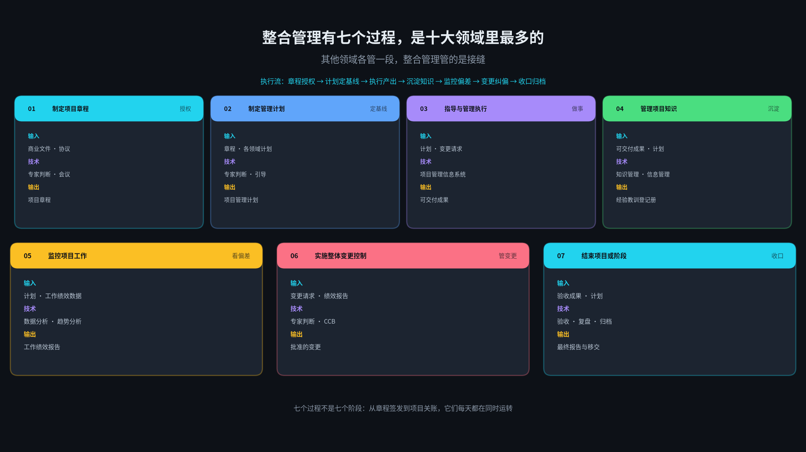
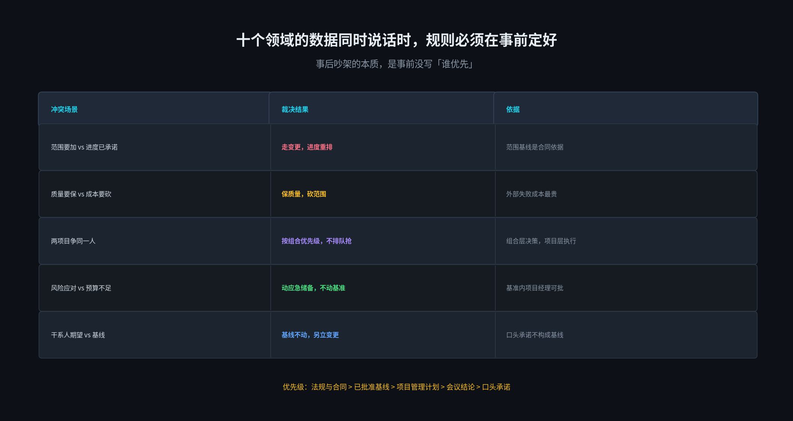
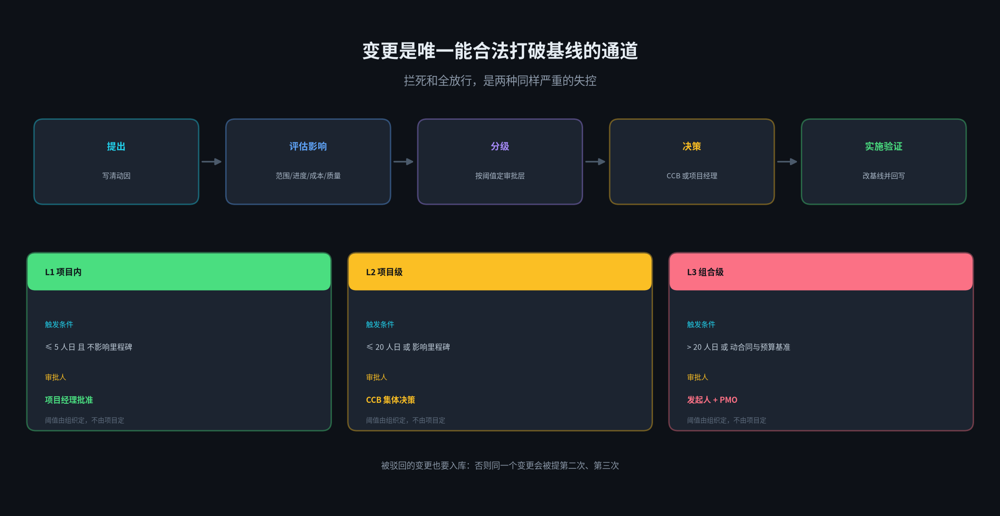
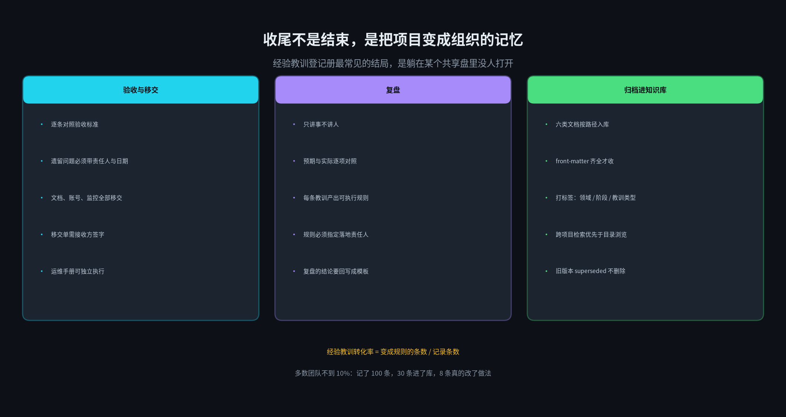
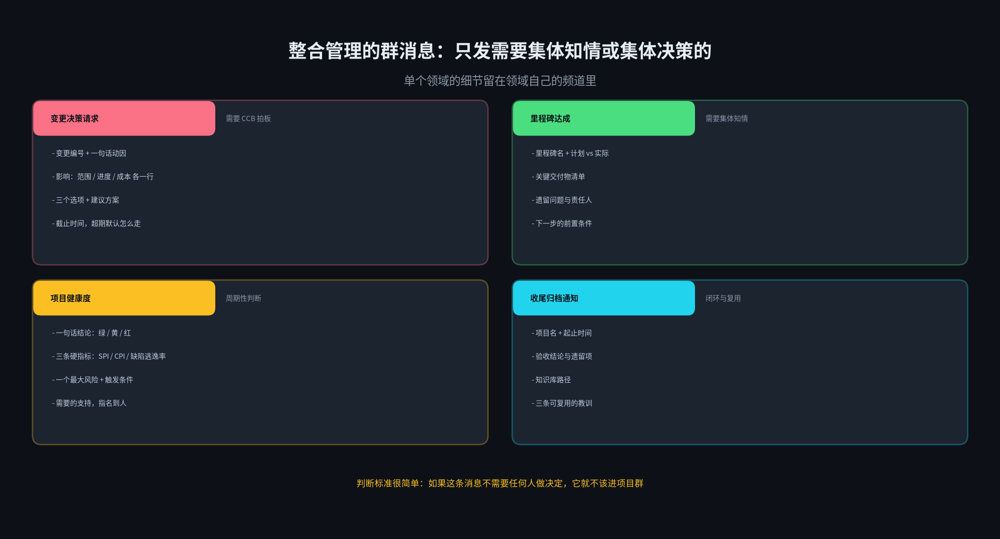

前面九篇，每一篇解决一个领域的问题。但真实项目里从来没有「一次只有一个领域在说话」这回事。
更常见的是这样：
场景一。客户临时要求加一个导出功能，范围说这是合理诉求；进度说 12 月底已经承诺出去，加不进去；成本说没有余量，加就要动预算。三方都没有错，三方都拿得出依据。
场景二。测试发现 30 个缺陷，质量说必须全部修完才能上线；成本说外包预算已经超了，再加人要审批；进度说延期一周就是违约。三个领域的结论互相排斥。
场景三。两个项目共用同一个核心开发，两边进度计划里都把他标成关键资源，两边的关键路径都挂在他身上。资源管理只能告诉你「他超配了 160%」，但没法告诉你该砍哪个。
这些冲突不是因为哪个领域做得不好，而是因为领域之间天然对立。范围要更多，成本要更少，进度要更快，质量要更好——这四个诉求在数学上就无法同时最大化。
整合管理的本质不是把十份计划装订成一本，而是当它们互相矛盾时做取舍，并为这个取舍负责。
这是系列的第十一篇，也是收尾。结构照旧：七个过程的输入输出、三个重点（冲突裁决、变更控制、知识收尾）、六份模板、归档方式、四类群消息、SKILL 目录，最后是边界。
有一件事需要先说清楚：整合管理是十大领域里唯一没有专属工具的领域。范围有 WBS，进度有关键路径，成本有挣值，风险有矩阵。整合管理的「工具」就是取舍本身，而取舍要有人担责。所以这套 SKILL 的定位很明确——它负责把冲突摆到台面上、把选项算清楚、把决策记下来，但不代替人做决定。
1
七个过程：十个领域里最多的一类
PMBOK 里整合管理有七个过程，比其他任何领域都多。这不是因为它复杂，而是因为它是唯一一个横跨项目全生命周期的领域——从签发章程到项目关账，它一直在。

图 1 · 七个过程的 ITTO：章程授权、计划定基线、执行产出、沉淀知识、监控偏差、变更纠偏、收口归档
这七个过程有三个特别容易被跳过，而且跳过的理由都很充分：
制定项目章程。很多项目是先开工、后补章程，因为「业务等不了」。但章程真正的作用不是走流程，是定义一个能对结果负责的人。章程里没有签发人，项目出问题时就会变成「大家一起决定的」。
管理项目知识。这是七个过程里唯一没有交付物压力的一个。它不产出可验收的东西，所以永远排在待办列表最后。
结束项目或阶段。项目一验收，核心成员立刻被抽去下一个项目，收尾就变成一个人补文档。而补出来的文档，通常只有结论没有过程，对下一个项目几乎没价值。
还有一点值得注意：这七个过程的主要输出，绝大多数是「更新」而不是「新增」——更新项目管理计划、更新变更日志、更新经验教训登记册。整合管理的产物不是一堆新文档，而是让已有文档保持一致。
2
重点一：冲突时听谁的，规则必须事前定
这是第一个重点。它看起来像是个管理问题，其实是数据治理问题。

图 2 · 五类典型冲突的裁决结果与依据
为什么一定要事前定？因为事后再定规则，每个人都能找出对自己有利的那条依据。范围会说「客户需求是第一位的」，进度会说「承诺的日期不能改」，成本会说「超预算要总裁批」。三句话都对，但依据不同层级，吵不出结果。
所以需要一条明确的优先级链。这条链要写进章程，在启动会上当众确认一遍：
法规与合同 > 已批准基线 > 项目管理计划 > 会议结论 > 口头承诺
这条链解决的正是那些最常见的扯皮。「你上次会上答应我的」——会议结论低于已批准基线，所以要走变更；「我在电话里跟你说过」——口头承诺排在最后，不入库。
AI 在这个环节做什么
不是裁决。裁决需要担责，AI 担不了。AI 做的是「检测不一致」——同一件事在两份文档里说法不同时，把它指出来。
举个具体的例子。进度计划说 12 月 20 日上线；风险登记册里写着「UAT 必须在 12 月 10 日前完成」；范围说明书里说 UAT 需要 15 个工作日。这三个数字放在一起，12 月 20 日上线就是不可能事件。任何一个领域单独看都没问题，交叉看才暴露出矛盾。
这类交叉校验可以完全自动化：把十份文档的关键日期、金额、数量抽成结构化字段，做一次两两比对。上面那个矛盾，机器 3 秒就能发现，而人可能要等到 12 月 5 日才发现——那时候只剩两个选择：违约，或者通宵。
3
重点二：变更控制，拦死和全放行一样糟
这是第二个重点。变更是整个整合管理里最核心的一个过程，因为它是唯一能合法打破基线的通道。没有它，基线就是一张过期作废的纸；滥用它，基线就形同虚设。

图 3 · 变更五步流程与三级审批阈值
两个同样严重的反模式
全部上会。CCB 变成每周例会，所有变更不论大小都排队等。结果是平均决策周期从 2 天变成 11 天，项目经理为了不耽误事，开始「先做后补」，变更流程彻底失效。这叫做流程把业务逼到了流程之外。
全都不上会。「这点小改动不用走流程」，一次两次没问题，一百次之后你会发现计划和实际差了 40%，而且找不到是在哪一步差出来的。
解法是分级阈值。上图的三级是这样的：5 人日以内且不影响里程碑，项目经理直接批；20 人日以内或影响里程碑，走 CCB；超过 20 人日或动到合同与预算基准，必须发起人和 PMO 一起签。阈值必须由组织定，不能由项目自己定——项目自己定阈值，等于自己给自己发豁免权。
变更单上最值钱的一栏
不是「影响多少工作量」，是「如果不做会怎样」。这一栏能挡掉一半的伪需求。因为大部分「必须加」的功能，在填这一栏的时候会暴露真相：不是业务会停，是某个人会觉得不方便。
还有一条容易被忽略的规则：被驳回的变更也要入库。否则同一个变更会在两个月后被重新提一次，由另一个人提，讨论一遍同样的问题，再被驳回一次。
顺带说一个统计规律：变更的真实成本从来不是那几天工作量。它主要花在重新协调上——通知测试改用例、告诉运维改部署方案、跟客户重新对齐验收标准、把已经写好的文档改一遍。这些时间不记在任何一张变更单上，但它们真实存在，通常是直接工时的 1.5 到 2 倍。
4
重点三：收尾，把项目变成组织的记忆
这是第三个重点。前面说过，「管理项目知识」是七个过程里唯一没有交付物压力的一个，所以它最容易变成走过场。

图 4 · 收尾三件事：验收移交、复盘、归档进知识库
经验教训登记册最常见的结局，是躺在某个共享盘里没人打开。原因很简单：记录不等于知识，知识是「下次遇到同样情况该怎么做」。
所以有一项指标值得盯：经验教训转化率，也就是变成规则的条数除以记录条数。大多数团队这个数字不到 10%——记了 100 条，30 条进了库，真正改变了做法的只有 8 条。
什么叫「变成规则」
教训：「上线前应该做压测」。这是记录，不是规则。
规则：「所有对外接口上线前必须通过 3 倍峰值压测，未通过不允许发布，压测报告作为发布单的必填附件」。这才是规则——它可执行、可检查、有明确的不合规后果。
区别在于：前者需要有人记得，后者不需要。只有不依赖记忆的东西才能跨项目传递。
让复盘有效的三条规则
只讲事不讲人。一旦开始讨论「谁的责任」，会议性质就变了，后面所有人都会开始自我保护。
每条教训必须产出可执行规则。产不出来的，说明还没想清楚，先别入库。
规则必须指定落地责任人。没有责任人的规则，和没有规则是一样的。
5
六份模板与组织过程资产归档
七个过程收敛成六份文档，其中三份是全项目唯一的，另外三份是持续更新的台账。
统一 front-matter
---
doc_id: IM-PAY-2026-014
doc_type: change_request
project: payment-v2
version: 1.2.0
status: baselined
baseline_at: 2026-11-08
owner: wangjing
related: [SC-PAY-2026-008, ST-PAY-2026-003]
supersedes: IM-PAY-2026-013
---
doc_type 六个取值：project_charter、integrated_plan、work_performance、knowledge_log、change_request、closure_report。
变更单：一份完整记录
change_id: CR-021
title: 增加对公转账回单下载
reason: 财务对账需要，否则每月人工 3 人日
impact:
scope: 新增 2 个接口
schedule: +6 人日，M3 顺延 3 天
cost: +1.8 万元
quality: 需补 12 个用例
if_not_done: 财务继续人工对账，每月 3 人日
options:
- A 本期做，+6 人日
- B 下期做，本期人工
- C 只做查询不做下载
level: L2
decision: B
decision_by: ccb
decision_at: 2026-11-08
baseline_after: v3.1
几个字段值得单独说。impact 必须拆成四个维度，不能合成一个「影响：中等」——合起来就等于没写。if_not_done 是前面说的那一栏。options 至少三个且必须包含「不做」——只有一个选项的决策不叫决策，叫通知。baseline_after 记录决策后基线升到哪一版，这是让基线和变更对得上的唯一办法。
归档：进项目知识库
路径固定为 /kb/{project}/integration/{doc_type}/{doc_id}-v{version}.md，三态 draft → baselined → superseded，永不物理删除。
这里有本系列里唯一的一个特殊要求：整合管理文档要能反查其他九个领域。变更单调用了范围基线，范围基线就要能查到有哪些变更动过它。related 字段做双向索引，这是整套体系里最不起眼但最有用的一处设计——它让「这个数字是从哪来的」永远有答案。
6
四类群消息与 SKILL 结构
整合管理的群消息有一条硬规则：只发需要集体知情或集体决策的。单个领域的细节留在领域自己的频道里。

图 5 · 四类整合管理消息：变更决策、里程碑达成、项目健康度、收尾归档
变更决策请求：要 CCB 拍板时发。必须给三个选项加一个建议，并写清截止时间和超期默认怎么走。
里程碑达成：需要集体知情时发。计划 vs 实际、交付物清单、遗留问题、下一步前置条件。
项目健康度：周期性判断。一句话结论加三条硬指标（SPI、CPI、缺陷逃逸率），再加一个最大风险和触发条件。注意这里只发一个风险，不是十个——发十个等于没发。
收尾归档通知：闭环与复用。知识库路径加三条可复用的教训。
SKILL 目录：一个 Skill，六个脚本
skills/integration-manager/
SKILL.md
references/
itto.md # 七过程输入技术输出
priority.md # 冲突优先级与裁决表
threshold.md # 变更分级阈值
templates.md # 六份文档模板
messages.md # 四类群消息格式
scripts/
charter.py # 章程结构化与校验
plan.py # 计划一致性与交叉比对
change.py # 变更分级、影响汇总
knowledge.py # 教训转规则、转存
close.py # 验收清单与归档校验
notify.py # 企微 / 飞书推送
plan.py 是整套体系里最特别的一个。它不生成任何新文档，只做一件事：把十个领域的关键数字抽出来做交叉比对，发现矛盾就报警。每周跑一次，输出的是一份「不一致清单」。这份清单往往比任何一份领域报告都有价值。
7
边界：取舍必须有人担责
第一，AI 不做取舍。它可以算出「延期三天省 8 万」和「按期交付多花 8 万」，但选哪个取决于业务对时间的真实需求——那个判断既涉及商业价值，也涉及谁承担后果。这一步必须有人签字。
第二，阈值由组织定。AI 只能执行阈值，不能自己设定。让项目自己定阈值，等于让它给自己发豁免权。
第三，知识库不等于知识管理。把文档存进去只是第一步。没有检索、没有规则转化、没有人在新项目启动时主动查，那就只是一个更大的共享盘。
第四，健康度红灯必须带请求。只发一个「红」不发具体请求，等于把焦虑转嫁给群里所有人，没有一个人会因此采取行动。
第五，收尾报告不能美化。延期就写延期，超支就写超支，复盘里最没用的部分就是「在领导的正确指导下圆满完成任务」。这类文字会让整份复盘失去被检索的价值。
前十个领域教你怎么把事做对，整合管理教你在都不对的时候，选一个能承受的错。
十一篇写下来，这套东西真正的价值可能不在任何一个单独领域，而在于它们的数字能互相对上。进度说这个月完成 40%，成本说花了 45%，质量说缺陷数翻倍——单看每一条都是一句汇报，放在一起才是一个判断。
这也是为什么整个系列都在反复强调同一件事：主键统一、口径统一、模板统一。不是为了整齐好看，是为了让交叉比对成立。十个领域各自做得再精细，如果数字对不上，项目经理最后还是只能靠开会吵架来决策。
系列进度：框架 → 范围 → 进度 → 成本 → 质量 → 资源 → 沟通 → 风险 → 采购 → 干系人 → 整合（本篇，完）。
Skill Accumulation 提示：十一篇同结构推文，骨架完全一致。如果把这套结构固化成 skill——输入领域名、过程清单、两到三个重点、一支配色——剩下的正文、五张图、模板章节都可以按模板生成。这也是这个系列本身想证明的事：可复用的东西，才是有价值的。